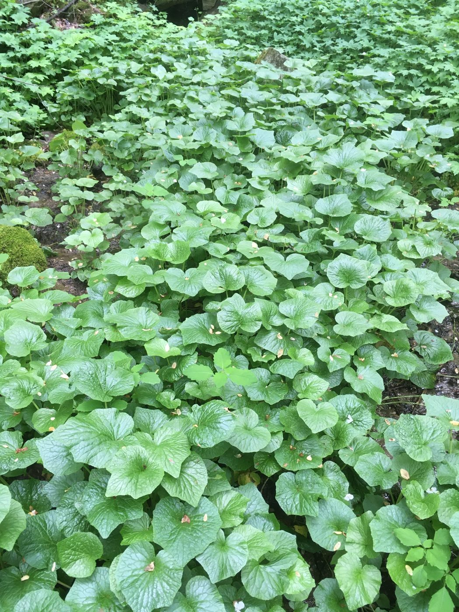

Growing Guide
Grow your own wasabi.
From the day your plant starts arrive to your first harvest about two years later. Wasabi asks for shade, cool water and patience.
When your starts arrive
Your plant starts travel bare-root with cold packs, so the first job is to get them cool again.
Refrigerate them right away
Open the box as soon as it arrives and put the starts in the refrigerator.
Keep them humid, not wet
Store them in a closed container that is not airtight, with a slightly damp paper towel nearby but not touching the plants. Remoisten the towel every few days.
Plant within a week
Starts are happiest in the ground (or a pot) within a week of arrival. If a hot spell is coming, pot them up and keep them in a cool, shady spot until the weather turns.
Why spring and fall? We ship plant starts and fresh rhizomes only from March through May and September through November, when mild temperatures make for safer travel and give new plants the best chance to settle in. See the shipping calendar.
Pick the right spot
Wasabi grows wild along cool, shaded mountain streams, and a garden spot should feel as close to that as you can manage.
- Deep shadeAt least 75% shade during the day; a north-facing spot out of direct sun is ideal
- Cool airGrows best around 50–60°F
- Steady moistureCool, moving water if you have it; consistently moist soil if you don’t
- Good drainageWet is good, standing water is not
Watch the extremes. Long stretches of heat, roughly above 80°F, stress and can kill wasabi, and a hard freeze can too. Growth slows in cold weather. If your summers run hot or your winters hard, grow in containers you can move.

Prepare the soil or pot
In the ground: wasabi likes loose soil that is very rich in organic matter and stays moist, with a pH between 6 and 7. Work a few inches of well-composted organic matter into the bed before planting, and mulch afterward to hold in moisture.
In a container: use an organic-rich potting mix in a pot with good drainage. A 6-inch pot works for a young start; move it up to a pot about 12 inches across after its first year. Water often, but never let the pot sit in its drainage water.
Plant your starts
Pick a cool, cloudy day
Planting on a mild, overcast day or in the evening spares new starts from heat stress while they settle in.
Soak and tidy
Soak the roots in cool water for a few minutes and remove any damaged leaves.
Set the crown at soil level
Make a hole just deep enough for the roots. Cover the roots completely, but keep the crown, where the stems meet, at the surface rather than buried.
Give them room
Space plants about 12 inches apart. Mature plants grow 8 to 18 inches tall.
Water in with cool water
Firm the soil gently, water thoroughly, and add shade cloth if the spot gets any sun.
Ongoing care
- Water: keep soil consistently moist with cool water. In warm spells, extra shade and a light misting help keep plants cool.
- Feed lightly: a slow-release balanced fertilizer every few months is plenty. Under-feeding is safer than over-feeding.
- Tidy up: remove dead leaves, keep weeds down, and cut back leaves or stems that stay wilted for more than a few days.
- Pests: slugs, snails and aphids are the usual visitors. Hand-pick slugs and use a strong spray of water or insecticidal soap on aphids.
- Winter: in milder areas, mulch over the plants and keep watering. Where winters are harsh, bring potted plants into a cool room with soft light.
Harvest and grow more
Patience pays. A rhizome takes about two years to reach 4 to 6 inches long. Harvest in the cool of spring or fall: lift the whole plant, gently wash off the soil, and trim away the leaves.
Keep your patch going. Mature plants put out side shoots around the main rhizome. When you harvest, break these off and replant them, and your patch renews itself.
Snack along the way. The leaves, stems and flowers are edible too, so you can pick a few leaves from established plants long before harvest. Our Kitchen Guide has ideas.